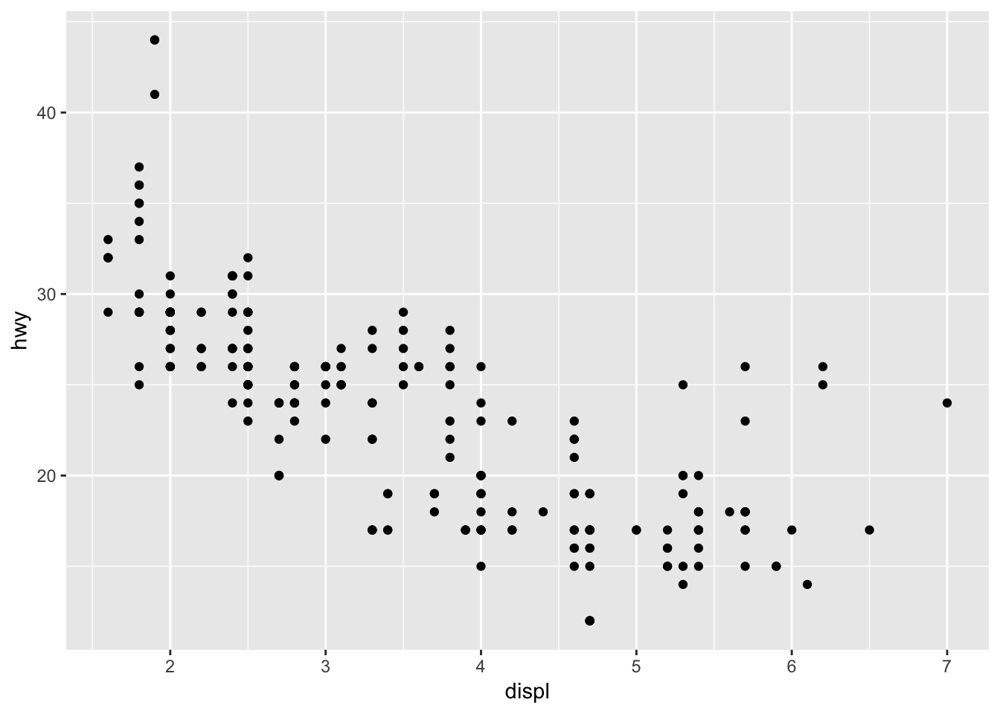
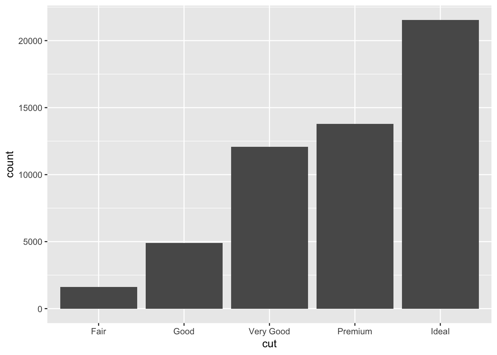
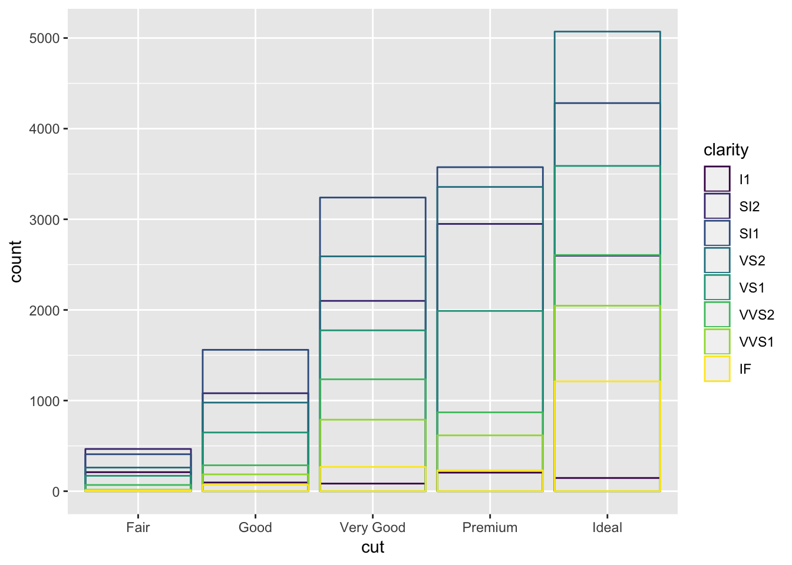
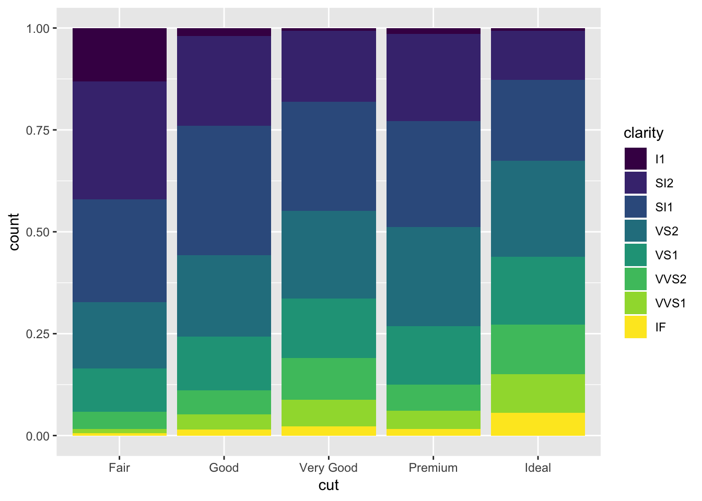
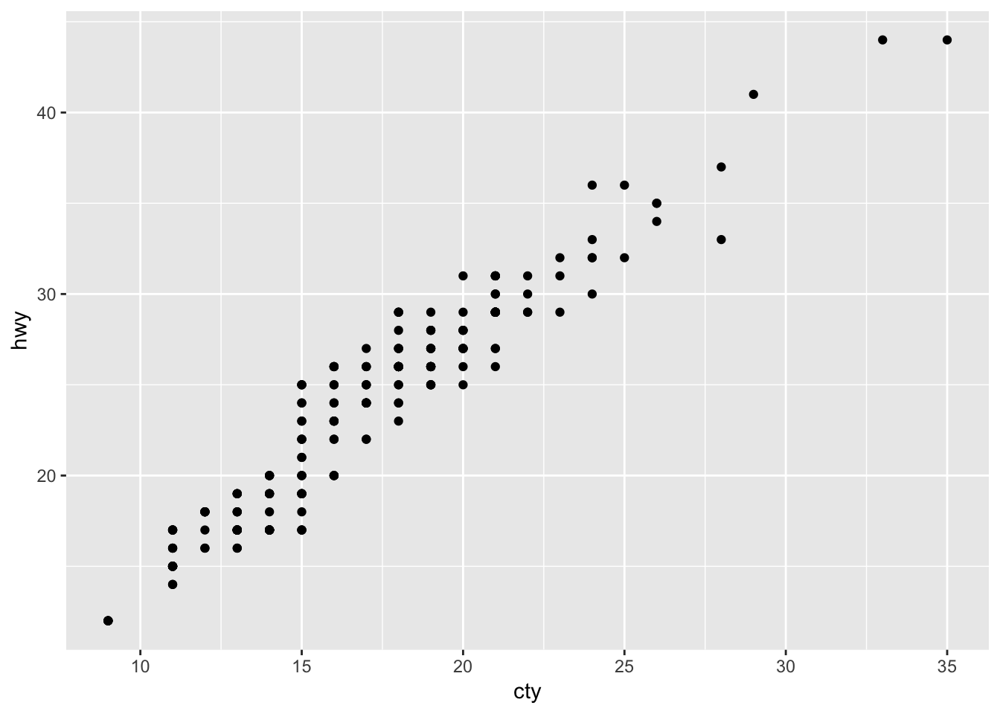
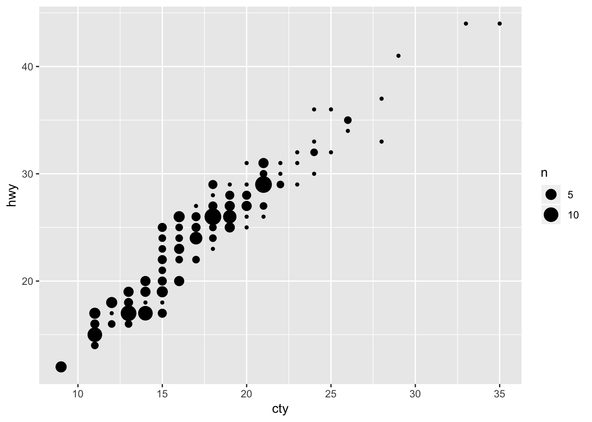
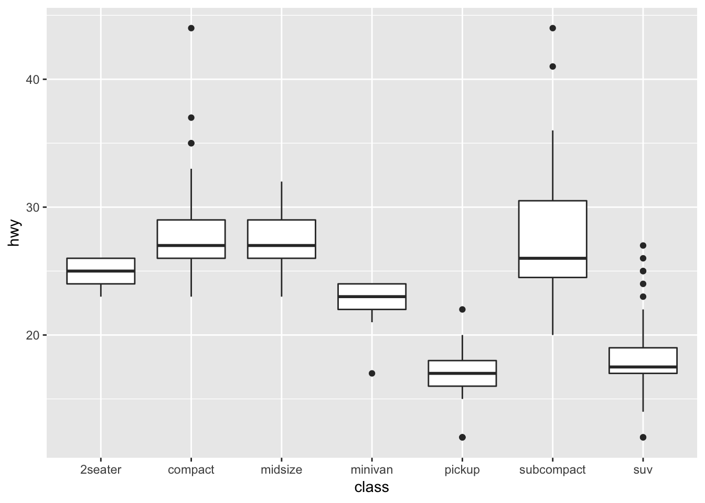

Chapter 3 Chapter 3 - Data Visualization
library(tidyverse)## ── Attaching packages ──────────────────────────────────── tidyverse 1.2.1 ──## ✔ ggplot2 3.1.0 ✔ purrr 0.2.5
## ✔ tibble 2.0.1 ✔ dplyr 0.7.8
## ✔ tidyr 0.8.2 ✔ stringr 1.3.1
## ✔ readr 1.3.1 ✔ forcats 0.3.0## Warning: package 'tibble' was built under R version 3.5.2## ── Conflicts ─────────────────────────────────────── tidyverse_conflicts() ──
## ✖ dplyr::filter() masks stats::filter()
## ✖ dplyr::lag() masks stats::lag()3.1 3.2 Creating a ggplot
Learn how to use ggplot2. The dataset we will work with is the built-in dataset mpg.
head(mpg)## # A tibble: 6 x 11
## manufacturer model displ year cyl trans drv cty hwy fl class
## <chr> <chr> <dbl> <int> <int> <chr> <chr> <int> <int> <chr> <chr>
## 1 audi a4 1.8 1999 4 auto(… f 18 29 p comp…
## 2 audi a4 1.8 1999 4 manua… f 21 29 p comp…
## 3 audi a4 2 2008 4 manua… f 20 31 p comp…
## 4 audi a4 2 2008 4 auto(… f 21 30 p comp…
## 5 audi a4 2.8 1999 6 auto(… f 16 26 p comp…
## 6 audi a4 2.8 1999 6 manua… f 18 26 p comp…Plot mileage (hwy) against engine displacement (displ):
ggplot(data = mpg) +
geom_point(mapping = aes (x=displ, y=hwy)) +
ggtitle("Engine displacement (x-axis) vs Mileage (y-axis)") +
theme(plot.title = element_text(hjust = 0.5))I added a title to the ggplot (ggtitle) and centered the title by adding a theme parameter. I also found that it was not required to have the “data =” or “mapping =” in the ggplot() or geom_point() parameters. Since there was a inverse correlation, I was interested to see what a linear model would look like if fitted to the data. Here is how I added a trend line to the plot above.
ggplot(data = mpg, aes (x = displ, y = hwy)) +
geom_point() +
ggtitle("Engine displacement (x-axis) vs Mileage (y-axis)") +
theme(plot.title = element_text(hjust = 0.5)) +
geom_smooth(method = 'lm', se = F)I had to specify the aes in the ggplot() parameter, so that it would apply to both the geom_point() and geom_smooth(). When I kept the aes in the geom_point() paramter as before, I received an error.
3.2 3.2.4 Exercises
3.2.1 1. Run ggplot(data = mpg). What do you see?
ggplot(data = mpg)We see an empty plot. The ggplot() function simply creates a plotting space and specifies the data that will be plotted. Sequential parameters must be added (“+”) to the ggplot to see anything.
3.2.2 2. How many rows are in mpg? How many columns?
dim(mpg)## [1] 234 11There are 234 rows and 11 columns in the data set.
3.2.3 3. What does the drv variable describe? Read the help for ?mpg to find out.
?mpgThe drv column specifies whether the car is “f = front-wheel drive, r = rear wheel drive, 4 = 4wd” .
4.Make a scatterplot of hwy vs cyl.
ggplot(data = mpg) +
geom_point(mapping = aes (x=cyl, y=hwy)) +
ggtitle("Number of Cylinders (x-axis) vs Mileage (y-axis)") +
theme(plot.title = element_text(hjust = 0.5))There is an inverse correlation with the number of cylinders and how much mileage the car gets on the highway.
3.2.4 5. What happens if you make a scatterplot of class vs drv? Why is the plot not useful?
ggplot(data = mpg) +
geom_point(mapping = aes (x=class, y=drv)) +
ggtitle("Number of Class (x-axis) vs Type of Drive (y-axis)") +
theme(plot.title = element_text(hjust = 0.5))The data is not particularly useful since these are two categorical variables, and because the class of car does not usually dictate the type of drive. Furthermore, you do not know how many points fall under each of the dots seen at the crosshairs. This plot would suggest that, since there are many classes of cars with two or more types of drive.
3.3 3.3 Aesthetic Mappings
Color-code the points in the scatterplot by another variable in the data set.
ggplot(data = mpg) +
geom_point(mapping = aes(x = displ, y = hwy, color = class))
The plot shows that SUVs have low highway mileage and high engine displacement and that compact cars have high mileage and low engine displacement, as expected.
Another example, this time color coding based on the drv variable.
ggplot(data = mpg) +
geom_point(mapping = aes(x = displ, y = hwy, color = drv))We can see that the front wheel drive cars on average have low engine displacement and high highway mileage.
Using size variable to further categorize in the graph (you can combine multiple parameters for the cateogrization! This is pretty cool). If you try to use a categorical/discrete variable for size, an error will be displayed.
ggplot(data = mpg) +
geom_point(mapping = aes(x = displ, y = hwy, size = cyl, color = class, alpha = drv))## Warning: Using alpha for a discrete variable is not advised.3.4 3.3.1 Exercises
3.4.1 1. What’s gone wrong with this code? Why are the points not blue?
ggplot(data = mpg) +
geom_point(mapping = aes(x = displ, y = hwy, color = "blue"))
The points are not blue because the “color =” parameter lies within aes(). This means the function will be looking for a column within the mpg dataset called “blue”, which does not exist. So to fix this, place the “color =” parameter outside aes(), but within geom_point().
ggplot(data = mpg) +
geom_point(mapping = aes(x = displ, y = hwy), color = "blue")3.4.2 2. Which variables in mpg are categorical? Which variables are continuous? (Hint: type ?mpg to read the documentation for the dataset). How can you see this information when you run mpg?
One way you can figure out which are categorical vs continuous is by using the summary() function. The continuous variables will have the quartiles specified, whereas the categorical variables will not. You might have to be wary about categorical variables in numerical form, in which you would have to read the documentation. Runing just mpg would show the type of varable under the column name (char vs int vs dbl, etc.) which would also let you know this information.
summary(mpg)## manufacturer model displ year
## Length:234 Length:234 Min. :1.600 Min. :1999
## Class :character Class :character 1st Qu.:2.400 1st Qu.:1999
## Mode :character Mode :character Median :3.300 Median :2004
## Mean :3.472 Mean :2004
## 3rd Qu.:4.600 3rd Qu.:2008
## Max. :7.000 Max. :2008
## cyl trans drv cty
## Min. :4.000 Length:234 Length:234 Min. : 9.00
## 1st Qu.:4.000 Class :character Class :character 1st Qu.:14.00
## Median :6.000 Mode :character Mode :character Median :17.00
## Mean :5.889 Mean :16.86
## 3rd Qu.:8.000 3rd Qu.:19.00
## Max. :8.000 Max. :35.00
## hwy fl class
## Min. :12.00 Length:234 Length:234
## 1st Qu.:18.00 Class :character Class :character
## Median :24.00 Mode :character Mode :character
## Mean :23.44
## 3rd Qu.:27.00
## Max. :44.003.4.3 3. Map a continuous variable to color, size, and shape. How do these aesthetics behave differently for categorical vs. continuous variables?
I mapped the continuous variable, “cty”, city miles per gallon, using color and size. By color, the points are now on a gradient. By size, the larger points have higher city miles per gallon. I couldn’t map the continuous variable to shape, since there are a set number of shapes available. This was also an issue when running it for the variable “class”, since there was one more class than there were number of shapes as well (the SUV category has no points as a result).
# install gridExtra package to plot multiple graphs side by side, could also use cowplots package
# install.packages("gridExtra")
library(gridExtra)##
## Attaching package: 'gridExtra'## The following object is masked from 'package:dplyr':
##
## combinebyColor <- ggplot(data = mpg) +
geom_point(mapping = aes(x = displ, y = hwy, color = cty)) +
ggtitle("City miles mapped by color")
bySize <- ggplot(data = mpg) +
geom_point(mapping = aes(x = displ, y = hwy, size = cty)) +
ggtitle("City miles mapped by size")
grid.arrange(byColor, bySize, ncol=2)byShape <- ggplot(data = mpg) +
geom_point(mapping = aes(x = displ, y = hwy, shape = class))+
ggtitle("Number of Class (x-axis) vs Type of Drive (y-axis)")
byShape## Warning: The shape palette can deal with a maximum of 6 discrete values
## because more than 6 becomes difficult to discriminate; you have 7.
## Consider specifying shapes manually if you must have them.## Warning: Removed 62 rows containing missing values (geom_point).3.4.4 4. What happens if you map the same variable to multiple aesthetics?
The points will all lie on the same area of the spectrum for each aesthetic.
ggplot(data = mpg) +
geom_point(mapping = aes(x = displ, y = hwy, size = cyl, color = cyl, alpha = cyl))3.4.5 5. What does the stroke aesthetic do? What shapes does it work with? (Hint: use ?geom_point)
The stroke will modify the width of the border for geom_points that have a border. Below I increase the size of the points after categorizing by the drv variable.
ggplot(data = mpg) +
geom_point(mapping = aes(x = displ, y = hwy, shape = drv, stroke = 3))3.4.6 6. What happens if you map an aesthetic to something other than a variable name, like aes(colour = displ < 5)?
The aesthetic will be mapped to the output of the argument. Displ < 5 will return TRUE for all points less than 5, and these points will be mapped to a separate color. Below is an example of displ < 5 and cyl < 5.
ggplot(data = mpg) +
geom_point(mapping = aes(x = displ, y = hwy, color = displ < 5))
ggplot(data = mpg) +
geom_point(mapping = aes(x = displ, y = hwy, color = cyl < 5))3.5 3.5 Facets
Split data up into subplots based on a discrete variable: 1 dimensional facet. This allows us to focus in on subsets of the data (say for example, you wanted to quickly compare midsize vars vs minivans) Can add aesthetic mappings as well ontop of this!
ggplot(data = mpg) +
geom_point(mapping = aes(x = displ, y = hwy, color = drv)) +
facet_wrap(~ class, nrow = 2)Instead of adding the aesthetic mapping, we can also make a 2D facet. This lets us add yet another mapping on top. So useful!
ggplot(data = mpg) +
geom_point(mapping = aes(x = displ, y = hwy, color = trans)) +
facet_grid(drv ~ cyl)3.6 3.5.1 Exercises
3.6.1 1. What happens if you facet on a continuous variable?
Let’s try faceting on city miles per gallon (cty):
ggplot(data = mpg) +
geom_point(mapping = aes(x = displ, y = hwy)) +
facet_grid(drv ~ cty)
It looks like ggplot2 will still spit out a graph, but the graph is not very interpretable. It also takes much more time to process than a discrete variable with fewer factors.
3.6.2 2. What do the empty cells in plot with facet_grid(drv ~ cyl) mean? How do they relate to this plot?
The empty cells in facet_grid(drv~cyl) mean that there are no points that satisfy both of the conditions specified for drv and cyl. In the plot below, you can identify the same blank facet plots as the crosshairs that do not have points (for example, cars with 4 cylinders and rear wheel drive).
ggplot(data = mpg) +
geom_point(mapping = aes(x = drv, y = cyl))3.6.3 3. What plots does the following code make? What does . do?
Based on the output, I assume that . means to perform a 1D facet plot using the variable supplied. Although having the . vs not having it doesn’t change the output when using the form (~ drv). Switching between . ~ drv and drv ~ . flips the orientation of the graphs. Worth to note that facet_map(~ drv, ncol = 3) provides the same output as facet_grid(. ~ drv).
ggplot(data = mpg) +
geom_point(mapping = aes(x = displ, y = hwy)) +
facet_grid(drv ~ .)ggplot(data = mpg) +
geom_point(mapping = aes(x = displ, y = hwy)) +
facet_grid(. ~ drv)3.6.4 4. Take the first faceted plot in this section:
ggplot(data = mpg) +
geom_point(mapping = aes(x = displ, y = hwy)) +
facet_wrap(~ class)What are the advantages to using faceting instead of the colour aesthetic? What are the disadvantages? How might the balance change if you had a larger dataset?
Faceting will allow you to examine the overall distribution of one subset vs another. Pulling out the points and viewing the plot in isolation might make it easier to see trends in the data. Larger datasets with more variability between subsets (overlapping points) might want to use facets. However the computing power needed to facet the data might not scale well.
3.6.5 5. Read ?facet_wrap. What does nrow do? What does ncol do? What other options control the layout of the individual panels? Why doesn’t facet_grid() have nrow and ncol argument?
nrow and ncol in facet_wrap() determine how many rows and columns the output graphs will be organized into. Other options include as.table, or dir. facet_grid() does not have nrow and ncol because there are defined numbers of parameters for the two variables being compared.
3.6.6 6. When using facet_grid() you should usually put the variable with more unique levels in the columns. Why?
Putting the variable with more unique levels in the columns will allow you to scan the facets faster. Also, monitors are widescreen.
3.7 3.6 Geometric objects
Data can be visualized in different ways using different geom_ functions:
# left
ggplot(data = mpg) +
geom_point(mapping = aes(x = displ, y = hwy))
# right
ggplot(data = mpg) +
geom_smooth(mapping = aes(x = displ, y = hwy))## `geom_smooth()` using method = 'loess' and formula 'y ~ x'
Geom functions can be combined! Also, the better coding practice is to declare global parameters in ggplot() and change as you want in the geom_() functions, so that you do not have to modify or copy/paste multiple times. You can also only choose to display a subset of the data using the filter() command.
# declaring locally
ggplot(data = mpg) +
geom_point(mapping = aes (x = displ, y = hwy, color = drv)) +
geom_smooth(mapping = aes(x = displ, y = hwy, linetype = drv, color = drv))## `geom_smooth()` using method = 'loess' and formula 'y ~ x'# declaring globally and locally
ggplot(data = mpg, mapping = aes (x = displ, y = hwy, color = drv)) +
geom_point() +
geom_smooth(mapping = aes(linetype = drv))## `geom_smooth()` using method = 'loess' and formula 'y ~ x'
# using filter() to only display some of the data, dependent on city mileage value
ggplot(data = mpg, mapping = aes (x = displ, y = hwy, color = drv)) +
geom_point(data = filter(mpg, cty < 20)) +
geom_smooth(mapping = aes(linetype = drv))## `geom_smooth()` using method = 'loess' and formula 'y ~ x'3.8 3.6.1 Exercises
3.8.1 1. What geom would you use to draw a line chart? A boxplot? A histogram? An area chart?
Line chart would use geom_line(), a boxplot would use geom_boxplot(), a histogram would use geom_histogram(), and an area chart would use geom_area().
3.8.2 2. Run this code in your head and predict what the output will look like. Then, run the code in R and check your predictions.
I predict that hwy will be plotted against displ as a scatter plot, with the color of the dot depending on the drv variable. superimposed on these points will be a smoothened conditional mean line, also colored based on the drv variable, since these were declared globally.
ggplot(data = mpg, mapping = aes(x = displ, y = hwy, color = drv)) +
geom_point() +
geom_smooth(se = FALSE)## `geom_smooth()` using method = 'loess' and formula 'y ~ x'
3.8.3 3. What does show.legend = FALSE do? What happens if you remove it?
Why do you think I used it earlier in the chapter?
show.legend = FALSE prevents the legend from being displayed. If you remove it, the legends will show up. I think that it was set to false just to save space!
3.8.4 4. What does the se argument to geom_smooth() do?
Based on the ?geom_smooth documentation, the se argument tells the graph to either display or hide the confidence interval around the smooth function. This would depend on the type of smoothing performed (loess vs lm, etc.).
3.8.5 5. Will these two graphs look different? Why/why not?
ggplot(data = mpg, mapping = aes(x = displ, y = hwy)) +
geom_point() +
geom_smooth()## `geom_smooth()` using method = 'loess' and formula 'y ~ x'
ggplot() +
geom_point(data = mpg, mapping = aes(x = displ, y = hwy)) +
geom_smooth(data = mpg, mapping = aes(x = displ, y = hwy))## `geom_smooth()` using method = 'loess' and formula 'y ~ x'
No, the graphs will not look different. One defines the parameters globally, whereas the other defines the same parameters locally in each geom_() function.
3.8.6 6. Recreate the R code necessary to generate the following graphs.
ggplot(data = mpg, mapping = aes(x = displ, y = hwy)) +
geom_point () +
geom_smooth (se = FALSE)## `geom_smooth()` using method = 'loess' and formula 'y ~ x'
ggplot(data = mpg, mapping = aes(x = displ, y = hwy)) +
geom_point () +
geom_smooth (aes(group = drv), se = FALSE)## `geom_smooth()` using method = 'loess' and formula 'y ~ x'
ggplot(data = mpg, mapping = aes(x = displ, y = hwy, color = drv)) +
geom_point () +
geom_smooth (se = FALSE)## `geom_smooth()` using method = 'loess' and formula 'y ~ x'ggplot(data = mpg, mapping = aes(x = displ, y = hwy)) +
geom_point (aes(color = drv)) +
geom_smooth (aes(linetype = drv), se = FALSE)## `geom_smooth()` using method = 'loess' and formula 'y ~ x'ggplot(data = mpg, mapping = aes(x = displ, y = hwy, fill = drv)) +
geom_point (size = 3, shape = 21, stroke = 3, color = "white")3.9 3.7 Statistical Transformations
Make a barplot using geom_bar():
ggplot(data = diamonds) +
geom_bar(mapping = aes(x = cut))
We can also create a barplot if given a set of pre-defined values:
demo <- tribble(
~cut, ~freq,
"Fair", 1610,
"Good", 4906,
"Very Good", 12082,
"Premium", 13791,
"Ideal", 21551
)
ggplot(data = demo) +
geom_bar(mapping = aes(x = cut, y = freq), stat = "identity")Or plot the barplot as a proportion (kind of like a histogram would, except this uses discrete variables on the x axis):
ggplot(data = diamonds) +
geom_bar(mapping = aes(x = cut, y = ..prop.., group = 1))
This is how to provide a stat summary manually using stat_summary(). It might be better to visualize this using a boxplot. I’ll try making one here as well:
# stat summary
ggplot(data = diamonds) +
stat_summary(
mapping = aes(x = cut, y = depth),
fun.ymin = min,
fun.ymax = max,
fun.y = median
)
# boxplot
ggplot(data = diamonds) +
geom_boxplot( mapping = aes (x = cut, y = depth))As you can see, the layout for the stat_summary and boxplot are identical. The type of information provided by the boxplot is also very similar, except that it also provides the 1st and 3rd quartile and individual points lying outside. I am sure we could have added this information to the stat_summary().
3.10 3.7.1 Exercises
3.10.1 1. What is the default geom associated with stat_summary()? How could you rewrite the previous plot to use that geom function instead of the stat function?
Looking at the ?stat_summary page, the default geom function associated with it is “pointrange.” Below is a replicate of the plot using this geom_function:
ggplot(data = diamonds) +
geom_pointrange(mapping = aes (x = cut, y = depth, ymin =depth, ymax =depth))This plot looks similar, but its not exactly the same. We still need to find a way to convert the dots into a line and plot the median point.
3.10.2 2. What does geom_col() do? How is it different to geom_bar()?
geom_col() creates a barplot but uses the values in the data. In other words, it is as if we used geom_bar() with stat = “identity”.
3.10.3 3. Most geoms and stats come in pairs that are almost always used in concert. Read through the documentation and make a list of all the pairs. What do they have in common?
I would refer to this page on the tidyverse website to see all the pairs of stats and geoms: http://ggplot2.tidyverse.org/reference/. Most of the stats and corresponding geoms are paired and have the same suffix.
3.10.4 4. What variables does stat_smooth() compute? What parameters control its behaviour?
stat_smooth() computes the moving average using a choice of methods. You can set the span for the smoothing to calculate from, number of points to evalate the smoother at, and other parameters. Below I use stat_smooth to replicate one of the previous graphs that used geom_smooth().
ggplot(data = mpg, aes(x = displ, y = hwy)) +
geom_point(aes(color = drv)) +
stat_smooth(se = FALSE)## `geom_smooth()` using method = 'loess' and formula 'y ~ x'
3.10.5 5. In our proportion bar chart, we need to set group = 1. Why? In other words what is the problem with these two graphs?
Without the group = 1, each of the proportions that are calculated for every category in cut will be equal to 1. This is because geom_bar is calculating the proportion of each category in cut within that same category (ie: what proportion of “Fair” is in “Fair”). By forcing the group to be 1, the proper proportions as part of the total number of observations will be displayed. Changing the group size to an arbitrary number doesnt seem to change the graph.
ggplot(data = diamonds) +
geom_bar(mapping = aes(x = cut, y = ..prop..))
ggplot(data = diamonds) +
geom_bar(mapping = aes(x = cut, fill = color, y = ..prop..))
For some reason adding “group = 1” to the second geom_bar plot (the one with the fill = color parameter) gets rid of the fill. Looking online there was no straightforward solution to this, except for using ..count.. and manually calculating the proportions (not using y = ..prop..).
3.11 3.8 Position Adjustments
To apply a separate color to each bar, specify either “color” or “fill” within aes() with the same variable that was on the x axis.
# border, specify color parameter
ggplot(data = diamonds) +
geom_bar(mapping = aes(x = cut, colour = cut))#fill, specify fill parameter
ggplot(data = diamonds) +
geom_bar(mapping = aes(x = cut, fill = cut))If you color by a variable other than what was on the x axis, each bar will be split into colors:
ggplot(data = diamonds) +
geom_bar(mapping = aes(x = cut, fill = clarity))Note that this is plotting the raw counts, and not the proportions. Trying to do this using y = ..prop.. and group=1 does not work.
If you want to see the relative contribution in a different way (not stacked), set the position parameter to “identity”. This will overlap the bars and make them all start from 0. To visualize them, you must either make the bars transparent or have no fill.
ggplot(data = diamonds, mapping = aes(x = cut, fill = clarity)) +
geom_bar(alpha = 1/5, position = "identity")ggplot(data = diamonds, mapping = aes(x = cut, colour = clarity)) +
geom_bar(fill = NA, position = "identity") Alternatively, you can have all the bars go to the same height so you can see what the differences in proportion are between the subgroups of each item on the x axis (position = fill). Or, you can have each of the subgroups plotted side by side within each bar (position = dodge).
# position = fill
ggplot(data = diamonds) +
geom_bar(mapping = aes(x = cut, fill = clarity), position = "fill")
# position = dodge
ggplot(data = diamonds) +
geom_bar(mapping = aes(x = cut, fill = clarity), position = "dodge")
On scatterplots, overlapping points can be overlooked quite easily. One way to get around this is to jitter all the points, so that the number of overlapping points can be better visualized. The jitter parameter adds some normally distributed noise to each of the values in the dataset.
ggplot(data = mpg) +
geom_point(mapping = aes(x = displ, y = hwy), position = "jitter")
3.12 3.8.1 Exercises
3.12.1 1. What is the problem with this plot? How could you improve it?
ggplot(data = mpg, mapping = aes(x = cty, y = hwy)) +
geom_point()
A lot of the data points are overlapping, so we have no sense of how weighted each point is. A better version of the plot would be one that uses the jitter parameter:
ggplot(data = mpg, mapping = aes(x = cty, y = hwy)) +
geom_point(position = "jitter")
3.12.2 2. What parameters to geom_jitter() control the amount of jittering?
Based on ?geom_jitter, the “width” and “height” parameters for geom_jitter will control how much noise is added to each point.
3.12.3 3. Compare and contrast geom_jitter() with geom_count().
# geom jitter
ggplot(data = mpg, mapping = aes(x = cty, y = hwy)) +
geom_jitter()
# geom count
ggplot(data = mpg, mapping = aes(x = cty, y = hwy)) +
geom_count()
Geom_count does not “jitter” the points; instead, it increases the size of the point based off of how many points were in that specific x,y slot.
3.12.4 4. What’s the default position adjustment for geom_boxplot()? Create a visualisation of the mpg dataset that demonstrates it
?geom_boxplot() indicates that the default position is “dodge,” which means that any further grouping by aesthetic of each category on the x-axis will have the “dodge” positioning. As shown above, “dodge” splits the category into the indicated subgroups and plots it side by side within the category.
Here is a visualization of hte mpg dataset using geom_boxplot(), which shows the city miles per gallon for each class of car, further grouped by the type of drive. The type of drive is “dodged”:
ggplot (data = mpg, mapping = aes (x = class, y = cty)) +
geom_boxplot(aes (color = drv))If i wanted to plot the boxplots on top of each other, I would use position = “identity”, and then make the graphs transparent by specifying an alpha value:
ggplot (data = mpg, mapping = aes (x = class, y = cty)) +
geom_boxplot(aes (color = drv), position = "identity", alpha = 1)3.13 3.9 Coordinate Systems
Sometimes we want to swap the axes, for various reasons (one being that the x-labels are long and hard to fit on a small graph):
# vertical boxplots
ggplot(data = mpg, mapping = aes(x = class, y = hwy)) +
geom_boxplot()
# horizontal boxplots
ggplot(data = mpg, mapping = aes(x = class, y = hwy)) +
geom_boxplot() +
coord_flip()We also might want to change bar plots into pie charts:
bar <- ggplot(data = diamonds) +
geom_bar(
mapping = aes(x = cut, fill = cut),
show.legend = FALSE,
width = 1
) +
theme(aspect.ratio = 1) +
labs(x = NULL, y = NULL)
bar + coord_flip()bar + coord_polar()#3.14 3.9.1 Exercises
3.14.1 1. Turn a stacked bar chart into a pie chart using coord_polar().
The previous chart is a coxcomb plot, not what you would usually expect to see when looking at pie charts. Below I’ve modified the code to produce a more conventional pie chart, starting from a stacked bar chart.
# make a stacked bar chart with one bar
bar <- ggplot(data = diamonds) +
geom_bar(
mapping = aes(x = factor(1), fill = cut), # factor(1) can be "" or anything not specifying a variable in the dataset.
width = 1 #, -> if you want a transparent pie chart, uncomment these!
# position = 'identity',
# alpha = .2
) +
theme(aspect.ratio = 1) +
labs(x = NULL, y = NULL)
bar + coord_polar(theta = 'y')3.14.2 2. What does labs() do? Read the documentation.
Labs() allows you to specify custom labels for the ggplot graphs.
3.14.3 3. What’s the difference between coord_quickmap() and coord_map()?
coord_map() projects a spherical map onto a 2D plane, but does not preserve straight lines. coord_quickmap() does the same thing as coord_map except that it uses a quick approximation that preserves straight lines (for the most part).
3.14.4 4. What does the plot below tell you about the relationship between city and highway mpg? Why is coord_fixed() important? What does geom_abline() do?
The plot below tells us that there is a positive correlation between city and highway mpg. In other words, cars with higher city mileage tend to also have higher highway mileage. Although not necessary, coord_fixed() will make the scale of each axis the same width (5 units on the y axis moves up by the same length as 5 units on the x axis). Geom_abline() adds a line of slope 1 that passes through the origin (0,0). As it is now, it is not very informative. So, I modified the parameters to turn it into a regression line by passing in the slope and intercept values from the base R “lm” function. I also plotted the ggplot geom_smooth() as a comparison, showing that they provide the same line.
# provided example
ggplot(data = mpg, mapping = aes(x = cty, y = hwy)) +
geom_point() +
geom_abline() +
coord_fixed()
# modified the abline to plot a simple linear regression ontop of the points.
ggplot(data = mpg, mapping = aes(x = cty, y = hwy)) +
geom_point() +
geom_abline(intercept = lm(hwy ~ cty, data = mpg)$coeff[1], slope = lm(hwy ~ cty, data = mpg)$coeff[2]) +
coord_fixed()# used geom_smooth instead of geom_abline to get the same result
ggplot(data = mpg, mapping = aes(x = cty, y = hwy)) +
geom_point() +
geom_smooth (method = 'lm', se = F)+
coord_fixed()